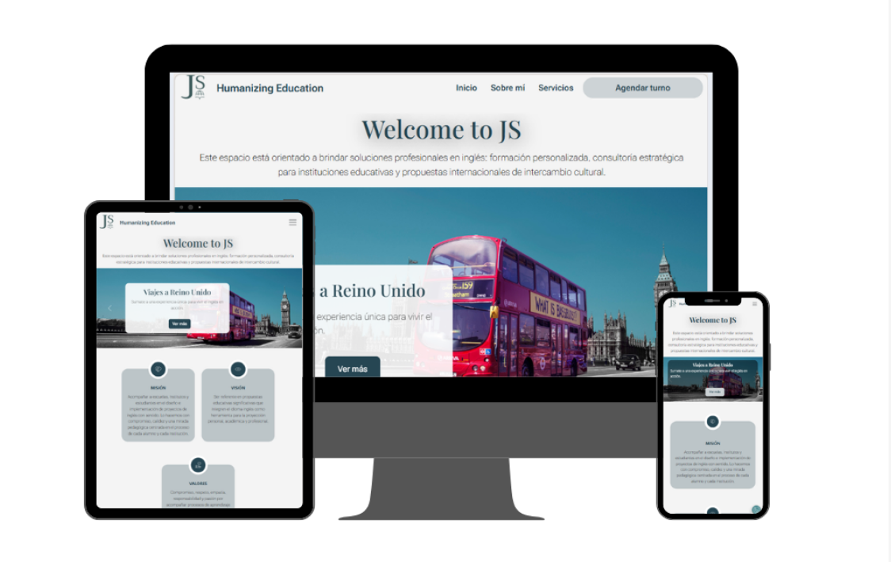

Wipeout
App de emergencia para proteger datos personales mediante el cierre rápido de sesiones activas.

Sitio web · Lic. Melisa Sarach
Landing profesional que presenta un enfoque integral de la nutrición, combinando asesoramiento, coaching y terapias complementarias.

Pastelería Martti
Sitio híbrido tipo landing + e-commerce que prioriza la experiencia visual y optimiza el proceso de compra.

Rediseño · Banco Macro
Rediseño UX/UI basado en testing con usuarios. Mejora de la experiencia y accesibilidad.

JS Humanazing Education
Web orientada a educación con foco en contenido, jerarquía visual y navegación simple.